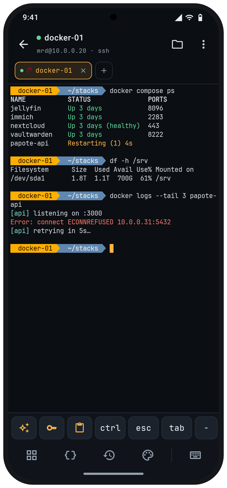
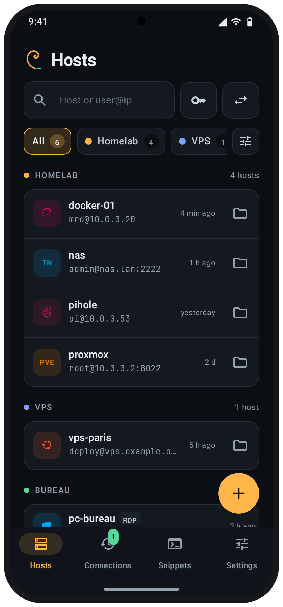
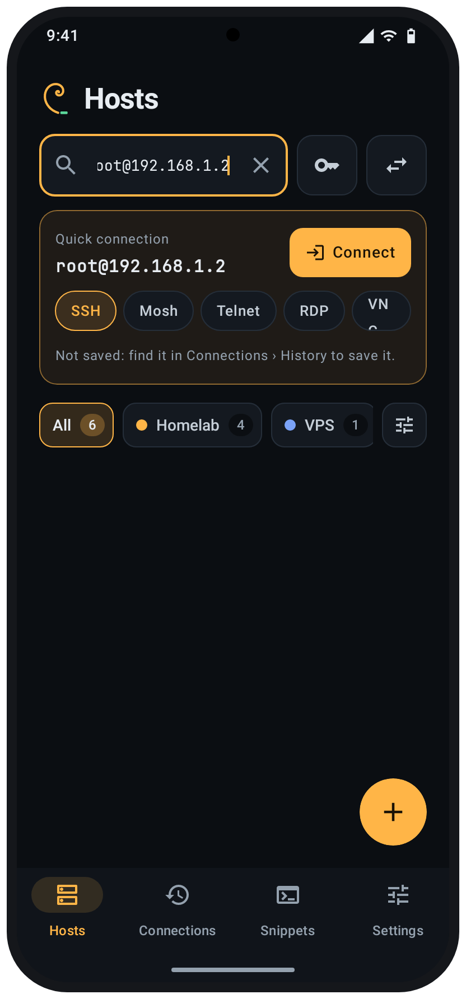
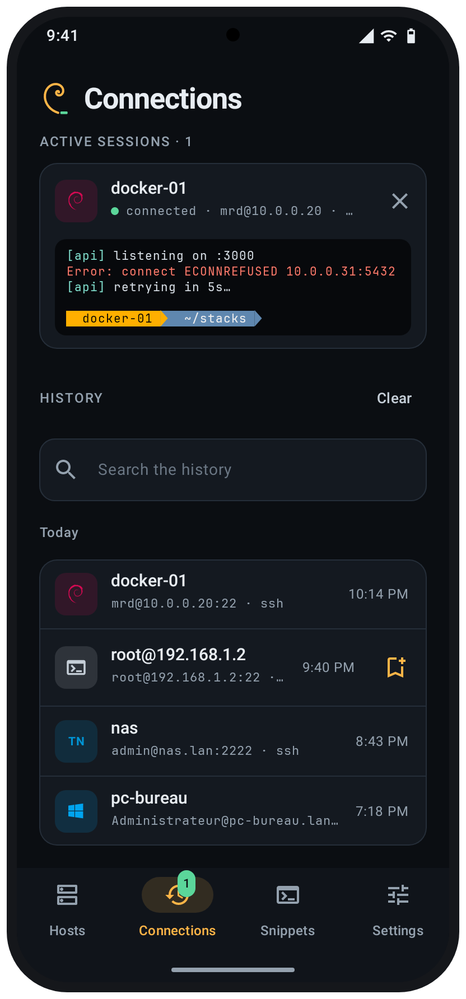
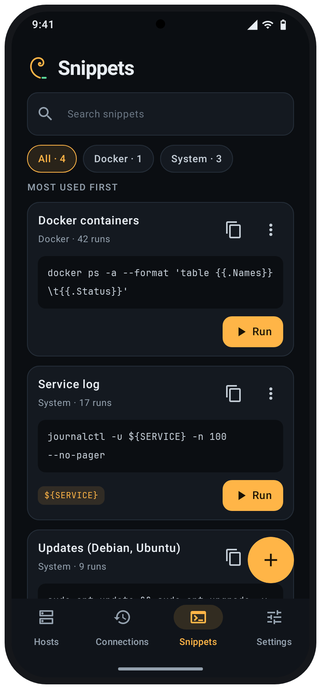
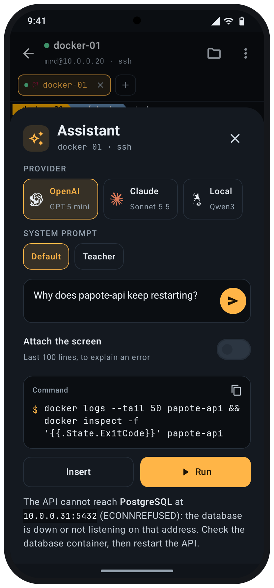
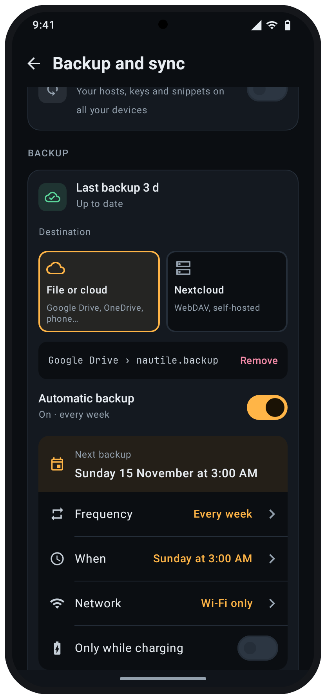
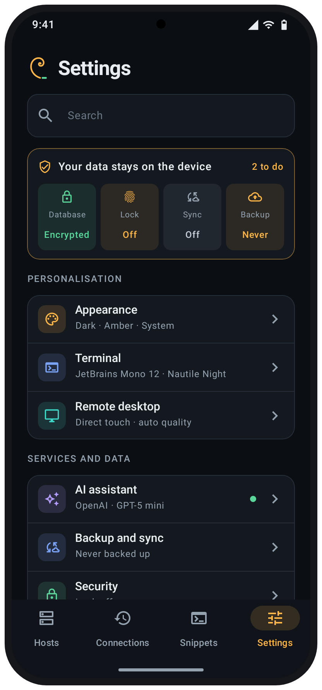

Your servers,
in your pocket.
Nautile is a free SSH, Mosh and remote-desktop client for Android: a real terminal, SFTP, tunnels, snippets and encrypted sync. No cloud, no account: your hosts, keys and passwords stay encrypted on your phone.

Made for a phone
Big touch targets, a key bar for what the keyboard lacks, and everything one tap away: connect, reconnect, open files, run a snippet.







Everything you need on the go
What you use daily on a laptop, rethought for a touch screen.
A real terminal
xterm-256color, tabs and split screen, pinch to zoom, a key bar you arrange, 10 themes and 5 Nerd Fonts (or your own).
SSH done right
Keys and identities, agent forwarding, ProxyJump, SOCKS5/HTTP proxies, port knocking and host-key pinning. Mosh, Telnet, USB serial and local shell too.
Remote desktop
FreeRDP 3 inside: NLA, hardware H.264, sound, clipboard, direct touch or touchpad, through an SSH tunnel if needed. VNC too, for Linux, macOS and Raspberry Pi.
Quick connection
Type root@192.168.1.2 in the search bar and connect without saving. Find it later in the history, ready to be saved.
Files, tunnels, snippets
SFTP with background transfers and remote editing, -L/-R/-D forwards, saved commands with variables run on several servers at once.
Encrypted sync and backup
Keep phones and tablets in step through Google Drive, OneDrive or your Nextcloud. Backups at the time and on the network you choose, the last five kept. Encrypted before it leaves.
AI assistant, your way
Claude, OpenAI, Gemini, Grok, Mistral, DeepSeek or a local model, with your own key and system prompts. Type or dictate, attach the screen or a config file, follow up, export as Markdown.
Sessions at a glance
Live previews of open terminals and desktops, a searchable history with OS logos, and a confirmation before closing a session.
Private by design
Nautile has no server and collects nothing. Data leaves your phone only when you ask.
- SQLCipher database, its key kept in the Android Keystore.
- Biometric lock with a re-lock delay, hidden from recent apps if you want.
- Backups and sync are encrypted on the phone (Argon2id + AES-256-GCM) before going to the storage you chose.
- The optional AI assistant uses your own key and only sends your question, the host's address and what you attach (the terminal screen, files).
- After a crash, an anonymised report you can read, then post on GitHub yourself. Nothing is sent otherwise.
Install Nautile
Free for Android 8.0 and newer, in English and French.
- Download the APK
arm64-v8afor almost every recent phone,armeabi-v7afor older ones, the universal APK if unsure. - Open it on your phoneAllow the installation from your browser or file manager.
- Add a host, or just type oneTap + and pick SSH, RDP, Telnet, serial or local, import your ~/.ssh/config, or type user@address to connect right away.
Every release is signed with the same key. Package com.nautile, certificate SHA-256: